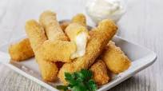

Ingredientes
- 400 grs. de muzzarella
- 2 Huevos
- Harina cant. necesaria
- Pan cantidad necesaria
- sal, aceite
Preparacion
- Cortar la muzzarella en bastones/li>
- Pasar los bastones por huevo alternando harina y pan rallado
- Llevar al freezer durante 20 minutos
- Retirar y hervir en abundante aceite hirviendo
- A disfrutar
| Proxima Receta | Fecha |
|---|---|
| Ñoquis | 29 de Agosto |